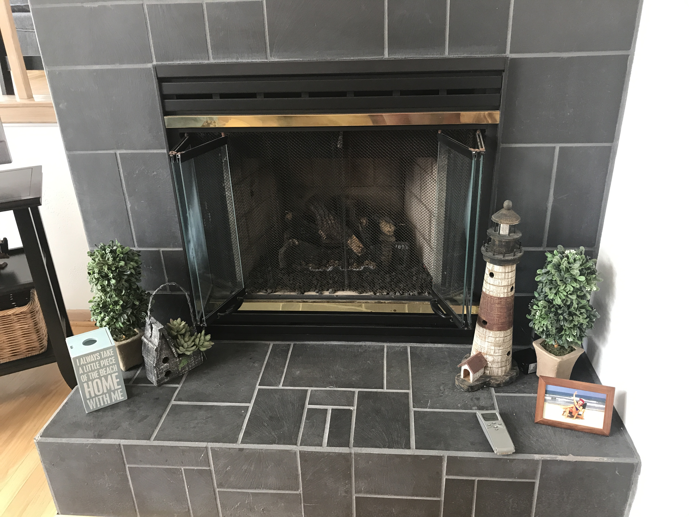

We have a fireplace for you to use at your disposal. To turn the fireplace on, press the "mode" button on the remote once and wait for the fireplace to turn on. To turn the fireplace off, follow the same steps of pressing the "mode" button once, and then waiting for the fireplace to turn off. If nothing happens when using the remote, check that the switch is clicked to the "On" position on the black box on the hearth. If you can't find the fireplace remote, check by the stereo system.
The living room TV has a stereo surround sound system with speakers in the ceiling and in front of the TV. Three units are necessary to run the system along with a remote for ease of use. Using the “Charter” remote and pushing the “Systems” button (top left) will turn on the TV, Cable box and Sound system.
*Note: for best results point the remote toward the fireplace so all three units can detect the remote. This does take about 10 seconds for all 3 units to be powered up.
1) TV: connected via a HDMI cable to the stereo
2) Cable Box: connected to stereo via HDMI and must be turned on
3) Stereo: must be turned on and input selector set to ‘Sat/CaTV’ if not then you will not get a picture or sound. If you would like to listen to the VCR, DVD or Bluetooth then turn the ‘Input Selector’ knob (second from the right) and select the appropriate device.
* Note: if for some reason all units do not turn on they can each be turned on individually by selecting each of the buttons AUX (stereo), TV (tv) or CBL (cable box) buttons from the remote and then pressing the power button (once for each unit).